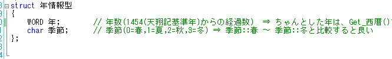
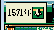
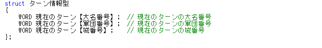
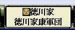
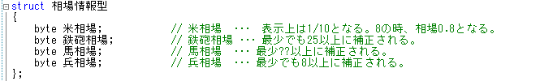
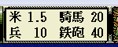
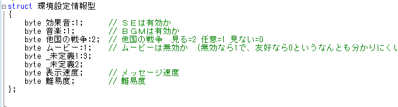
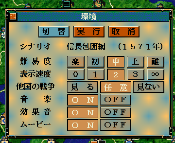
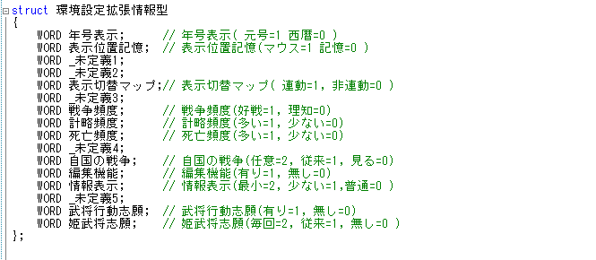
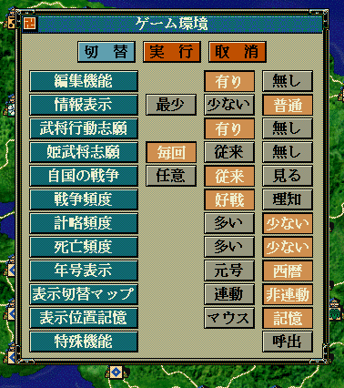

前章では「３本柱」について、学習しました。
この章は「p〇〇情報」について、学習します。
「pほげほげ」とは、天翔記の現在のゲームへの各種パラメータを直接読み取ったり書き込んだりするための、 変数群です。
メモリ上にある天翔記の該当値を直接読み取り・書き込みが可能となっています。
しかし、変更すると「不具合を起こす」「変更しても値は変化するが、画面には即座には反映されない値」も多々あります。
この「pほげほげ」情報の理解は極めて大切であり、
この理解がいい加減だとScenarioModが使いこなせる可能性は「０％」です!!
「pほげほげ」には「単数系列」と「複数系列」の２系統に分かれています。
まずは、理解しやすい「単数系列」から進めていきます。
単数系列の中で、代表的なものには以下のものがあります。
それぞれ「〇〇〇〇.h」といったファイルを
必ずScenarioModで開いて、実際に閲覧しながら見てください。
これらの「〇〇〇〇.h」といったファイルは今後開発していくうえで、
常に中身を閲覧・確認することになります。
| 年情報型.h | 年情報型 | p年情報 | 今何年・季節は？ など |   |
| ターン情報型.h | ターン情報型 | pターン情報 | メイン画面中で現在ターンが回ってる大名は？ 軍団は？ 城は？ など。 |   |
| 相場情報型.h | 相場情報型 | p相場情報 | 現在の米・鉄砲・兵士・馬の相場は？ など。 |   |
| 環境情報型.h | 環境設定情報型 | p環境設定情報 | 機能->環境で出てくる基本的な環境設定の各種値。 |   |
| 環境情報型.h | 環境設定拡張情報型 | p環境設定拡張情報 | 上述の「切替」で出てくる拡張環境設定の各種値。 |   |
さて、では、次節にて単数系の練習を行います。